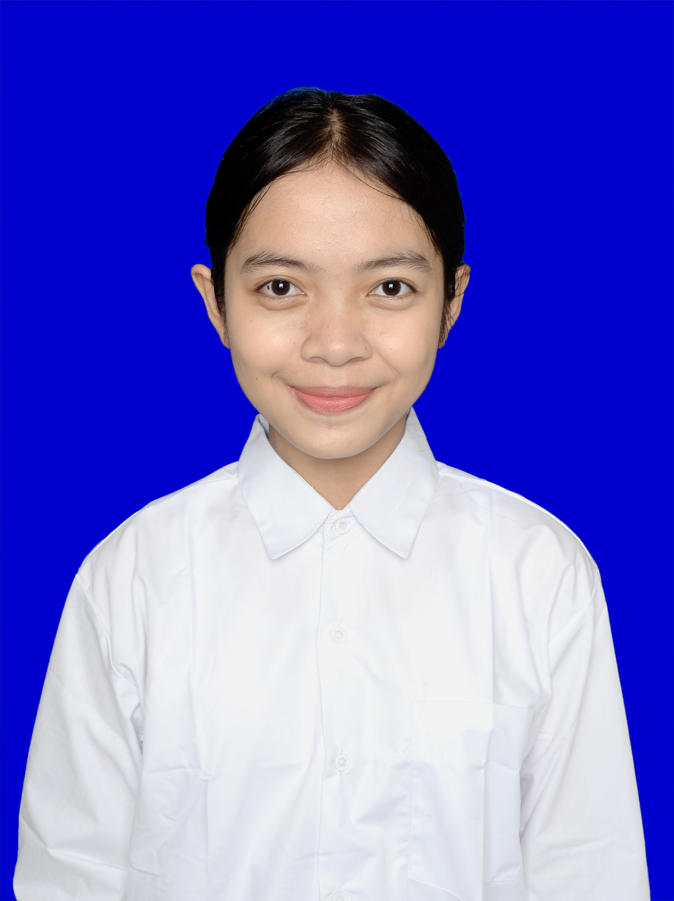

Halo, perkenalkan —
Ni Kadek Bella Citra Dewi
Mahasiswa baru S1 Sistem Informasi, Jurusan Teknik Informatika Universitas Pendidikan Ganesha. Biasa dipanggil BELLA, asal dari Badung. Halaman ini saya buat untuk memperkenalkan diri: siapa saya, dari mana, dan ke mana saya ingin melangkah.

- NIM
- 2615091065
- Kelompok
- Decimal
- No. Urut
- 16
Biodata Diri
Data lengkap saya
- NIM
- 2615091065
- Nama lengkap
- Ni Kadek Bella Citra Dewi
- Nama panggilan
- Bella
- No. urut
- 16
- Nama kelompok
- Decimal
- Alamat asal
- JL. Rahayu GG. 46/1 LINGK. Batubidak
- Asal sekolah
- SMA NEGERI 2 KUTA UTARA
- Program studi
- S1 Sistem Informasi, Jurusan Teknik Informatika
- Hobi
- Menggambar
- Alasan memilih TI
- Awalnya saya tertarik dengan teknologi karena penasaran bagaimana teknologi bisa mempermudah berbagai aktivitas sehari-hari. Saya memilih Jurusan Teknik Informatika, khususnya Program Studi Sistem Informasi, karena ingin belajar lebih jauh tentang teknologi sekaligus bagaimana sistem dapat digunakan untuk membantu menyelesaikan suatu masalah. Selama kuliah, saya ingin belajar tentang pembuatan sistem, pengolahan data, dan hal-hal baru di bidang teknologi.
- Cita-cita
- UI/UX Designer, Digital Marketing
Galeri
Beberapa momen


Mari terhubung
Silakan hubungi saya lewat kanal di bawah ini. Senang berkenalan dengan teman-teman satu angkatan.